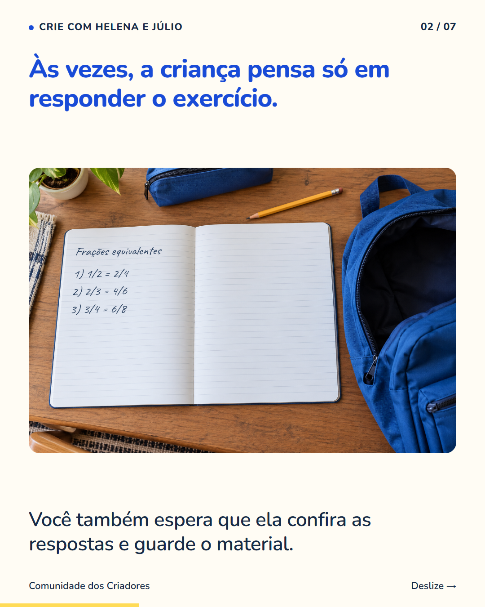
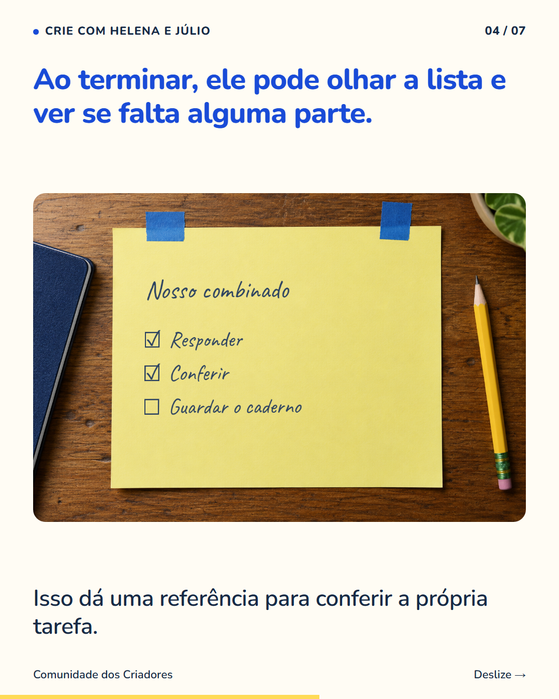
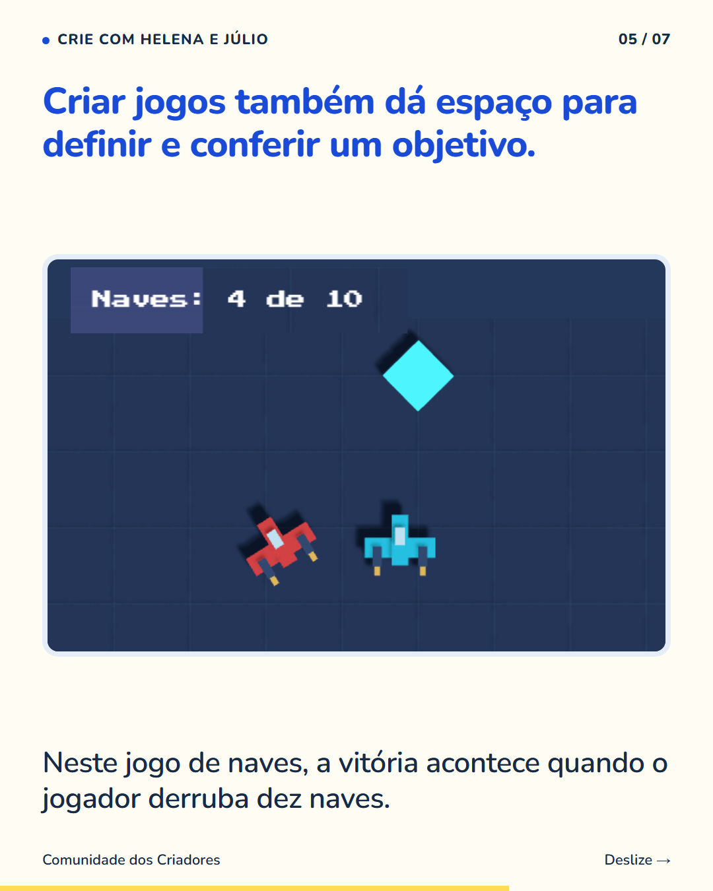
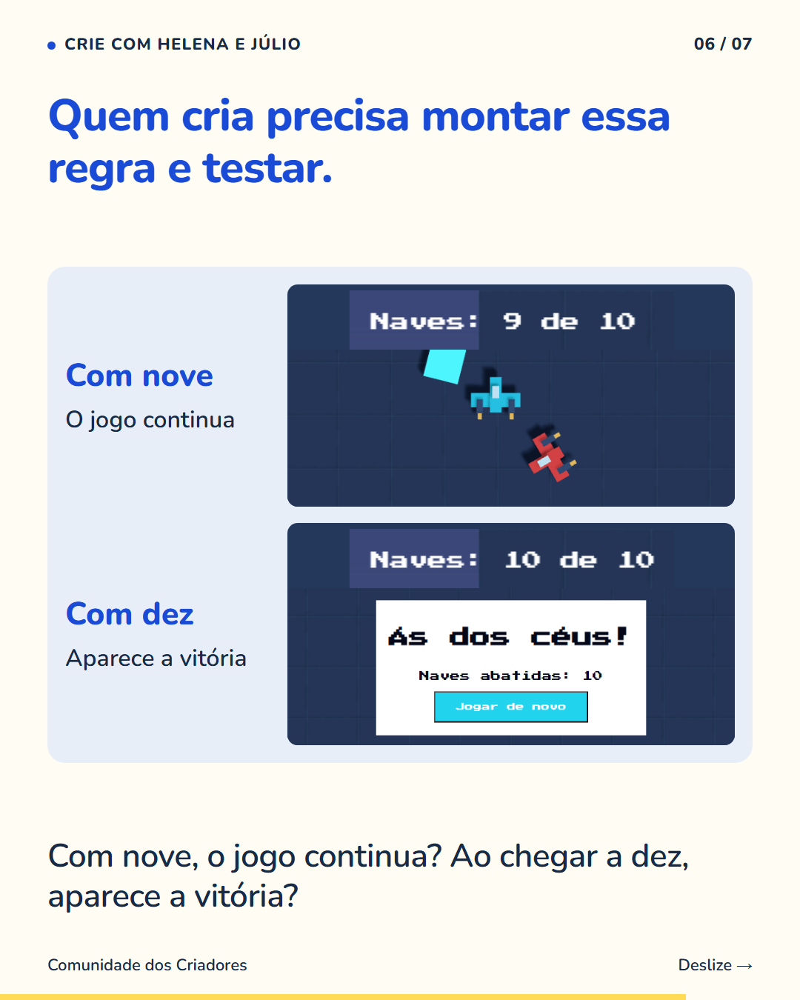

7 slides · 1080 × 1350 · Copy revisada · Definir o resultado e conferir se aconteceu




Uma tarefa fica mais clara quando todos sabem o que precisa estar pronto no final. Conversem antes de começar. Se a atividade é fazer o dever, o combinado pode incluir responder, conferir e guardar o caderno. Ajustem a lista à tarefa e ao que seu filho consegue acompanhar. Ao criar um jogo, ele também precisa pensar num resultado e conferir se ele acontece. No exemplo das naves, definir dez como meta exige testar o placar e a vitória. O número vira uma condição que o jogo precisa respeitar. Siga o perfil para ver o que as crianças podem praticar criando os próprios jogos.